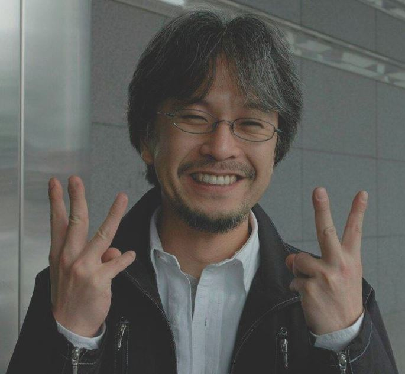

Introducción
Desde las intrincadas calles de Tokio, con sus tiendas repletas de volúmenes de manga y aficionados de todas las edades buscando la última entrega de sus series favoritas, hasta las estanterías de bibliotecas y librerías en ciudades alrededor del mundo, el manga ha dejado una huella imborrable en el paisaje cultural global. Estas historietas japonesas, que tienen sus raíces en las antiguas pinturas en rollo y se han adaptado a lo largo de los siglos para reflejar los cambios socioculturales de Japón, han cautivado a generaciones de lectores con su capacidad única de fusionar arte visualmente deslumbrante con narrativas profundas y emocionalmente resonantes. Trascendiendo barreras lingüísticas, culturales y generacionales, el manga ha demostrado ser mucho más que simples dibujos en papel; es un reflejo de la sociedad, un medio que aborda temas desde el heroísmo y la aventura hasta los desafíos cotidianos y las complejidades del amor y la amistad. A través de sus páginas, los lectores han viajado a mundos fantásticos, han luchado junto a héroes y heroínas, y han llorado y reído con personajes que, a pesar de ser de tinta y papel, sienten tan real y profundamente como cualquier ser humano. Pero detrás de estas emocionantes sagas y conmovedoras historias de vida, hay mentes brillantes en el trabajo: los mangakas. Estos creadores, que dedican innumerables horas a perfeccionar cada viñeta y dar vida a cada personaje, son el alma y el corazón del mundo del manga. Desde sus humildes comienzos, enfrentando obstáculos y superando adversidades, hasta alcanzar la cima del mundo del manga y ser reconocidos mundialmente, su viaje es tan fascinante como las historias que crean. En este artículo, emprenderemos un viaje para descubrir a estos maestros del arte y la narrativa, explorando no solo su impacto en la industria del manga, sino también su influencia en la cultura popular y su legado perdurable. Nos sumergiremos en las vidas y obras de algunos de los mangakas más icónicos y revolucionarios de la historia, aquellos que con su visión y talento han redefinido el paisaje del manga, sentando las bases para las futuras generaciones de creadores y dejando un legado que continúa inspirando a artistas y lectores en todo el mundo.
Mangakas Destacados
- Osamu Tezuka
- Akira Toriyama
- Eichiro Oda
- Masashi Kishimoto
- Naoki Urasawa
- Yoshihiro Togashi
- Kentaro Miura
Osamu Tezuka
Osamu Tezuka fue una figura influyente en la industria del manga y del anime en Japón, y es conocido como el "Dios del Manga". Nacido el 3 de noviembre de 1928 en Toyonaka, Osaka, y fallecido el 9 de febrero de 1989, Tezuka dejó una marca indeleble en la cultura pop japonesa.Inicios y Educación: Tezuka desarrolló un temprano interés en el dibujo y la animación, y fue profundamente influenciado por las caricaturas y los cómics de la época. Estudió medicina en la Universidad de Osaka, aunque nunca ejerció como médico. Sin embargo, su formación médica a menudo se reflejó en su trabajo. Carrera en el Manga y el Anime: Tezuka comenzó su carrera como mangaka (dibujante de manga) en la década de 1940, y pronto alcanzó la fama con la creación de "Astro Boy" (Tetsuwan Atom) en 1952, que se convirtió en una serie animada en 1963. Fue el inicio de la "Era de Oro del Manga", y Tezuka produjo una cantidad prolífica de trabajo, incluyendo "Black Jack", "Kimba el León Blanco", y "Buda". Fue un pionero en muchos aspectos, introduciendo elementos cinematográficos en sus mangas y estableciendo nuevas normas en la industria del anime. Fundó su propio estudio de animación, Mushi Production, que fue fundamental para establecer el anime como una forma de entretenimiento popular. Influencia y Legado: Tezuka dejó un legado duradero en la industria del entretenimiento en Japón y en todo el mundo. Su estilo artístico y narrativo ha influenciado a generaciones de creadores, y sus obras continúan siendo celebradas por su innovación y su humanismo. A lo largo de su vida, Tezuka recibió numerosos premios y reconocimientos, y después de su muerte, el Gobierno Japonés lo honró póstumamente con la Orden de la Cultura. También se han establecido varios museos y premios en su honor, incluyendo el Museo Osamu Tezuka en Takarazuka, Hyogo. Retos y Controversias: A pesar de su éxito, Tezuka enfrentó desafíos, incluyendo la competencia de otros estudios de animación y las presiones económicas. Además, algunas de sus obras han sido objeto de controversia por su representación de personajes y temas sensibles. En resumen, Osamu Tezuka fue una figura icónica cuya influencia en el manga y el anime sigue siendo relevante hasta el día de hoy.

Akira Toriyama
Akira Toriyama es un influyente mangaka y diseñador de personajes japonés, conocido principalmente por su trabajo en "Dragon Ball". Nacido el 5 de abril de 1955 en Nagoya, Aichi, Japón, Toriyama ha dejado una marca duradera en la cultura del manga y el anime. Inicios y Educación: Toriyama mostró un interés temprano en el dibujo desde su niñez. Aunque no se ha documentado ampliamente sobre su educación formal, se sabe que tras graduarse de la secundaria, trabajó en una empresa de publicidad durante tres años, antes de hacer la transición a la industria del manga. Carrera en el Manga: Su carrera como mangaka despegó con la serialización de "Dr. Slump" en la revista Weekly Shōnen Jump de 1980 a 1984. La serie fue un gran éxito y estableció a Toriyama como un talentoso creador de manga. Sin embargo, fue "Dragon Ball" (1984-1995), lo que lo catapultó a la fama internacional. Esta épica saga de artes marciales y aventuras se convirtió en una de las series de manga y anime más populares y exitosas de todos los tiempos, generando múltiples series de televisión, películas, videojuegos y una vasta gama de mercancía. Trabajos Posteriores y Colaboraciones: Después de "Dragon Ball", Toriyama trabajó en una variedad de proyectos, incluyendo mangas cortos, y se convirtió en un codiciado diseñador de personajes para videojuegos. Es conocido por su trabajo en la serie de videojuegos "Dragon Quest" y por colaborar en la creación de personajes para la serie "Chrono Trigger". También ha trabajado en la continuación de la saga de "Dragon Ball" con "Dragon Ball Super" junto con el artista Toyotarou. Estilo e Influencia: El estilo de dibujo de Toriyama es reconocible por sus personajes carismáticos y su humor peculiar. Su influencia en la industria del manga y del anime es vasta, y "Dragon Ball" en particular ha inspirado a varias generaciones de creadores. Legado: El legado de Akira Toriyama continúa siendo fuerte, con "Dragon Ball" manteniéndose como una franquicia globalmente reconocida. Su influencia se extiende más allá del manga y el anime, alcanzando también el mundo de los videojuegos y la cultura pop en general. En resumen, Akira Toriyama es una figura icónica en la industria del entretenimiento, cuyas obras continúan siendo celebradas y disfrutadas por fans de todo el mundo.

Eichiro Oda
Biografía de Eichiro Oda...
Masashi Kishimoto
Biografía de Masashi Kishimoto

Naoki Urasawa
Biografía de Naoki Urasawa

Yoshihiro Togashi
Biografía de Yoshihiro Togashi...

Kentaro Miura
Biografía de Osamu Tezuka...

Impacto Cultural
Aunque el manga tiene sus raíces en Japón, su popularidad ha cruzado fronteras. A lo largo de las últimas décadas, el manga ha ganado una audiencia masiva en todo el mundo, especialmente en Norteamérica, Europa y otras partes de Asia. La estilización única y las técnicas narrativas del manga han influenciado a artistas y escritores en todo el mundo. Esto puede verse en cómics, películas y programas de televisión que adoptan elementos estilísticos o temáticos del manga. A diferencia de muchos cómics occidentales que a menudo se centran en superhéroes o géneros específicos, el manga abarca una amplia variedad de géneros, desde romance hasta ciencia ficción, horror, deportes y más. Esta diversidad ha permitido que diferentes grupos de lectores se conecten con historias que resuenan con sus propias experiencias y intereses. l manga y el anime (animación japonesa) a menudo están interconectados. Muchos animes populares se basan en mangas de éxito, y viceversa. Esta relación ha ayudado a popularizar ambos formatos en todo el mundo. La popularidad del manga (y el anime) ha llevado a muchos aficionados internacionales a visitar Japón, impulsando el turismo relacionado con la cultura otaku. Ciudades como Tokio tienen distritos enteros, como Akihabara, que se han convertido en mecas para los fans del manga y el anime.